Patrimoine
Mémoire, continuité, transmission

Seigneurie Adjaoudi
Elle n’est pas une autorité publique. Elle n’exerce aucune fonction officielle, ne détient aucun pouvoir délégué, et ne parle au nom d’aucun État ni d’aucune administration. Le mot Seigneurie est employé ici comme une désignation familiale et culturelle.
Rien n’est publié ici tant que la famille ne l’a pas autorisé par écrit, et tant que l’entrée ne porte pas une date et une source.
En attente d’autorisation
Où la Maison situe son commencement, et sur la foi de quels documents.
En attente d’autorisation
Ce que signifie Adjaoudi, où le nom est attesté, et comment il a été porté. Ce texte sera écrit à partir d’une source fournie par la famille, et de rien d’autre.
En attente d’autorisation
Comment la Maison est organisée, qui parle en son nom, et comment les décisions sont prises.
En attente d’autorisation Cette chronologie ne comporte aucune entrée.
Elle est vide volontairement. Une entrée n’est ajoutée que lorsque trois choses existent ensemble : une date, une source que l’on peut nommer, et l’autorisation écrite de la famille de la publier. Une chronologie patrimoniale vaut exactement ce que vaut sa plus faible entrée.
Cinq attributs, repris du guide de la Maison. Ils gouvernent l’écriture autant que le dessin.
Mémoire, continuité, transmission
Savoir, discernement, influence
Retenue, tenue, responsabilité
Ouverture, dialogue, générosité
Capacité numérique, innovation, projets concrets
Aucune section ne correspond à cette recherche.